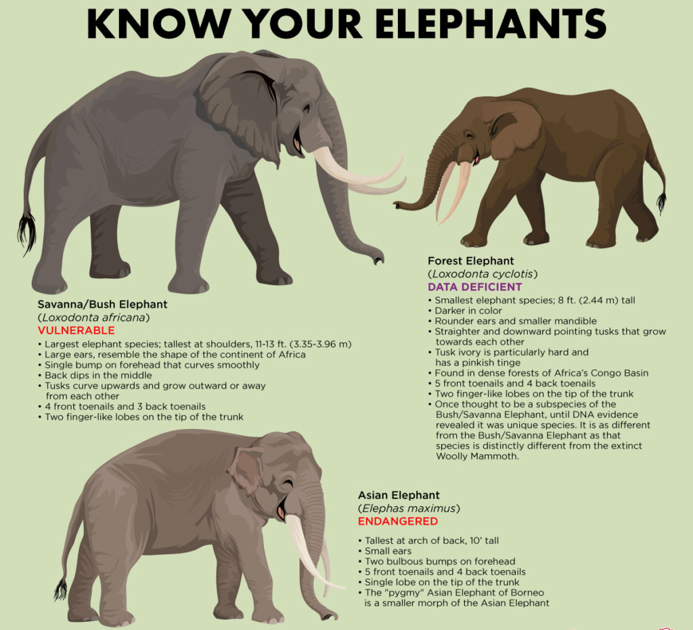

Loxodonte, which refers to the lozenge-shaped enamel of the tusk, was proposed as generic name for African elephants by Georges Cuvier in 1824. Elephas (Loxodonta) cyclotis was the scientific name proposed by Paul Matschie in 1900 who described the skulls of a female and a male African Forest specimen collected by the Sanaga River. The African forest elephant was considered to be a subspecies of the African elephant for a long time; as well as the African bush elephant. However, recent Morphological and DNA analysis showed that they are two distinct species. Because of this recent discovery, the taxonomic status of the pygmy elephant was for a long time and still is uncertain.
Phylogenetic analysis of nuclear DNA of 5 elephant species revealed that the African forest elephant and African bush elephant form a sister group that genetically diverged at least 1.9 million years ago. Therefore, are both considered distinct species. Gene flow between the two species might have occurred after the split, also merging some elephant species. Analysis of ancient DNA from living and extinct elephantids indicates that the African forest elephant is one of three ancestors of the straight-tusked elephant.
The African forest elephant is distributed in the evergreen moist deciduous Upper Guinean forests. The largest stable population lives in Gabon. The African forest elephant lives in family groups. Groups of up to 20 individuals contain adult cows, their daughters and subadult sons. Family members look after calves together, called allomothering. Once young bulls reach sexual maturity, they separate from the family group and form loose bachelor groups for a few days, but stay alone for the most part. Adult bulls associate with family groups only during the mating season. Family groups travel about 4.8 miles per day and may move homes up tp 770 sq miles away. They use a complex network of permanent trails that pass through stands of fruit trees and connect forest clearings with mineral licks.
The African forest elephant is a herbivore. Elephants feed mostly on tree bark and leaves, and at least 72 different fruits. They congregate at mineral-rich waterholes and mineral licks for hydration. When seeds pass elephant intenstines, they germinate faster. The African forest elephant is one the most effective seed disperser in the tropics, and has been referred to as the “megagardener of the forest” due to its significant role in maintaining plant diversity. In the Cuvette Centrale, 14 of 18 megafaunal tree species depend on seed dissemination by African forest elephants, including wild mango. These 14 species are not able to survive without elephants.African forest elephants provide ecological services that are vital to maintain the composition and structure of Central African forests.
Males or Bulls may reach a of height of 8 to 10 feet. Females are smaller at about 6 to 8 tall. They reach a weight of 2–4.5 tons. Foot print size, depending on sex and age, can range from 5 to 14 inches. The tip of the trunk of African elephants has two finger-like processes. The trunk is a prehensile elongation of its upper lip and nose. This highly sensitive organ is manipulated by about 40–60,000 muscles. The trunk is so strong that elephants can use it for lifting about 3% of their own body weight. They use it for smelling, touching, feeding, drinking, dusting, producing sounds,loading, defending and attacking. The African forest elephant’s tusks are straight and point downwards. Both male and female African elephants have tusks that grow from flat teeth called tushes, which are replaced by tusks when calves turn one year old. Tusks are composed of dentin. The African forest elephant has pink tusks, which are thinner and harder than the tusks of the African bush elephant.
The length and diameter varies. Tusks of bulls grow throughout life, tusks of cows or females, cease growing when they are sexually mature. They use their tusks for marking and debarking trees, digging for roots, minerals and water, to rest and protect the trunk, and also for defense and attack.The tusks are used to push through the dense undergrowth of their habitat. Their tusks can grow to about 5 ft long and can weigh between 50 - 100 lb. The African Forest Elephant is a herbivorous animal. They predominantly eat leaves and fruit from trees, herbs and low-lying shrubs. However, the front pair of molars in the mouth of the African Forest Elephant wear down and drop out in pieces, making the back pair shift forward and two new molars emerge in the back of the African Forest Elephant’s mouth. African Forest Elephants replace their teeth six times during their lives but when the African Forest Elephant is about 40 to 60 years old, the African Forest Elephant no longer has teeth and will likely die of starvation.
Little to no literature is available on communication and perception between them. For these mammals, hearing and smell are the most important senses they possess because they do not have good eyesight. They can recognize and hear vibrations through the ground and can detect food sources with their sense of smell. Elephants are also an arrythmic species, meaning they have the ability to see just as well in dim light as they can in the daylight. The elephant’s feet are sensitive and can detect vibrations through the ground from up to 10 miles away. On average, they begin breeding at the age of 23 and give birth every 5-6 years. As a result, the birth rate is lower than the bush species, That time allows mothers to devote all the attention that the calf needs to teach it all the complex tasks that come with being an elephant, such as using their trunk to eat, wash, and drink.
Forest elephants have a lifespan of about 60 to 70 years and mature slowly, coming to puberty in their early teens. Males generally pass puberty within the next year or two of females. Both African elephant species are threatened foremost by habitat loss and habitat fragmentation following conversion of forests for plantations of non-timber crops, livestock farming, and building urban and industrial areas. As a result, human-elephant conflict has increased. Poaching for ivory and bushmeat is a significant threat in Central Africa. African Forest Elephants are threatened throughout much of their natural habitat today mainly due to deforestation and climate change and have been pushed into smaller and smaller pockets of their native lands